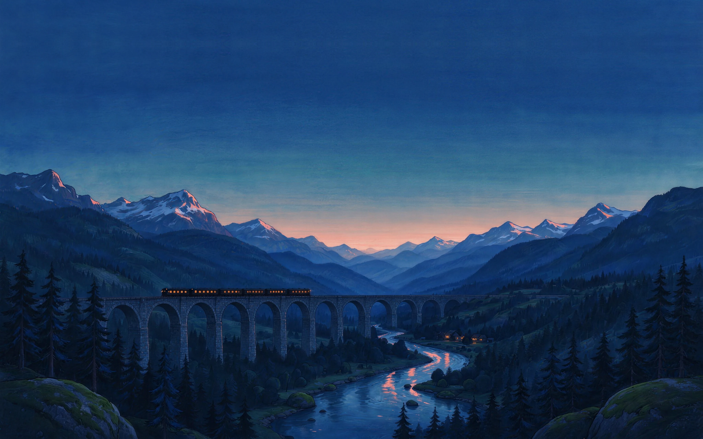

<!doctype html>
<html lang="en">
<head>
<meta charset="utf-8">
<meta name="viewport" content="width=device-width, initial-scale=1">
<title>Couchette Footer Motion</title>
<link rel="preconnect" href="https://fonts.googleapis.com">
<link rel="preconnect" href="https://fonts.gstatic.com" crossorigin>
<link href="https://fonts.googleapis.com/css2?family=Inter+Tight:wght@500&family=Geist:wght@400;500&display=swap" rel="stylesheet">
<style>
/* Couchette: night trains across the Alps. The page ends the way the day does, on the last train out.
   All text stays in the sky, the land carries no words. The route list is a small timetable and the headline's train is its last row. */
:root {
  --sky: #1a447b;
  --primary: #f5f1e8;
  --secondary: #dde3ea;
  --muted: #c3cedb;
  --window: #ffc27a;
  --ease: cubic-bezier(.22, 1, .36, 1);
}
* { box-sizing: border-box; }
html, body { margin: 0; background: var(--sky); }
body { font: 400 16px/1.4 "Geist", system-ui, sans-serif; color: var(--primary); -webkit-font-smoothing: antialiased; }
a { color: inherit; text-decoration: none; transition: color 150ms var(--ease); }
a:hover { color: var(--window); }
a:focus-visible { outline: 2px solid var(--window); outline-offset: 4px; border-radius: 2px; }
h2, p, ul { margin: 0; padding: 0; }
ul { list-style: none; }

/* the picture is 16:10 and anchored to the floor; its land starts at 38.6% of its height */
.foot {
  position: relative; overflow: hidden; min-height: 62.5vw;
  display: grid; grid-template-columns: 1fr auto; column-gap: 64px; align-items: start;
  padding: 56px 64px calc(38.4vw + 24px);
}
.scene { position: absolute; left: 0; bottom: 0; width: 100%; height: auto; display: block; user-select: none; }
.scene.live { position: absolute; left: 0; bottom: 0; width: 100%; aspect-ratio: 16 / 10; height: auto; }
.head, .side { position: relative; }
.side { padding-top: 4px; } /* column titles share a baseline with the name */

.mark { display: inline-block; font: 500 20px/1.4 "Inter Tight", sans-serif; letter-spacing: .005em; }
h2 { font: 500 clamp(40px, 5vw, 96px)/1.06 "Inter Tight", sans-serif; letter-spacing: .005em; margin-top: 32px; }
.time { font-feature-settings: "case"; }
.head p { margin-top: 16px; font-size: 18px; color: var(--secondary); }

nav { display: flex; gap: 64px; }
nav b { display: block; font-weight: 500; margin-bottom: 16px; }
nav li + li { margin-top: 8px; }
nav a { color: var(--secondary); }
nav a:hover { color: var(--window); }
.route { display: flex; justify-content: space-between; gap: 32px; }
.route span:last-child { color: var(--muted); font-variant-numeric: tabular-nums; transition: color 150ms var(--ease); }
.route:hover span:last-child { color: inherit; }

.legal { display: flex; gap: 24px; margin-top: 32px; font-size: 14px; color: var(--muted); }
.legal a { color: var(--secondary); }
.legal a:hover { color: var(--window); }

/* narrower than the sky can hold: the text comes first and the picture melts up into the sky colour */
@media (max-width: 1160px) {
  .foot { grid-template-columns: 1fr; padding: 48px 40px calc(38.4vw + 24px); row-gap: 40px; }
  .side { padding-top: 0; }
  .scene, .scene.live { -webkit-mask-image: linear-gradient(to bottom, transparent, #000 20%); mask-image: linear-gradient(to bottom, transparent, #000 20%); }
  nav { gap: 48px; }
}

/* phone: the picture is cropped in on the train, and rows grow to touch height */
@media (max-width: 720px) {
  .foot { padding: 40px 24px calc(73vw + 16px); row-gap: 32px; }
  .scene, .scene.live { width: 190vw; left: -23vw; }
  .head p { font-size: 16px; }
  nav { display: grid; grid-template-columns: 1fr 1fr; gap: 32px 24px; }
  nav > div:first-child { grid-column: 1 / -1; }
  nav b { margin-bottom: 4px; }
  nav li + li { margin-top: 0; }
  nav li a { display: flex; align-items: center; min-height: 40px; }
  .legal { flex-wrap: wrap; gap: 8px 24px; margin-top: 24px; }
}
</style>
</head>
<body>

<footer class="foot">
  
  <canvas class="scene live" width="2880" height="1800" aria-hidden="true"></canvas>

  <div class="head">
    <a class="mark" href="#">Couchette</a>
    <h2>The last train<br>leaves at <span class="time">22:14</span></h2>
    <p>Fall asleep in Zürich. Wake up in Trieste.</p>
  </div>

  <div class="side">
    <nav aria-label="Footer">
      <div><b>Tonight</b><ul>
        <li><a class="route" href="#"><span>Munich to Venice</span><span>20:48</span></a></li>
        <li><a class="route" href="#"><span>Geneva to Nice</span><span>21:32</span></a></li>
        <li><a class="route" href="#"><span>Zürich to Trieste</span><span>22:14</span></a></li>
        <li><a href="#">All routes</a></li>
      </ul></div>
      <div><b>On board</b><ul>
        <li><a href="#">Couchettes</a></li>
        <li><a href="#">Sleepers</a></li>
        <li><a href="#">Breakfast</a></li>
        <li><a href="#">Dogs</a></li>
      </ul></div>
      <div><b>Help</b><ul>
        <li><a href="#">My ticket</a></li>
        <li><a href="#">Refunds</a></li>
        <li><a href="#">Night desk</a></li>
      </ul></div>
    </nav>
    <div class="legal"><span>© 2026 Couchette SA</span><a href="#">Privacy</a><a href="#">Terms</a></div>
  </div>
</footer>


<script type="module">
/* The painting is taken apart into layers (img/motion) and put back together on every frame.
   Everything is a pure function of time and repeats every 16 s, so the loop has no seam.
   Motion stays small and physical: nothing glows, nothing bounces, the paint itself never slides except the water. */
const T = 16, ACTIVE = 14, START = 4.4;      // the loop, the part with a train, and where frame 0 falls
const W = 4096, H = 2560;
const TAU = Math.PI * 2;
const params = new URLSearchParams(location.search);
const canvas = document.querySelector('canvas.scene');
const gl = canvas.getContext('webgl2', { alpha: true, premultipliedAlpha: true, antialias: true, preserveDrawingBuffer: params.has('film') });
if (!gl) throw new Error('no webgl2');
const base = 'img/motion/';
const meta = await fetch(base + 'meta.json').then(r => r.json());

const lerpTable = (xs, ys, x) => {
  if (x <= xs[0]) return ys[0];
  for (let i = 1; i < xs.length; i++) if (x <= xs[i]) { const k = (x - xs[i-1]) / (xs[i] - xs[i-1]); return ys[i-1] + (ys[i] - ys[i-1]) * k; }
  return ys[ys.length - 1];
};
const deck = x => lerpTable(meta.trackX, meta.trackY, x);
// the viaduct recedes: the arches at the far end are half the size of the near ones
const scaleAt = x => lerpTable([250, 1000, 1800, 2600, 3400], [1.14, 1.0, .78, .56, .42], x);

// world distance along the track, from the far trees toward the viewer
const X0 = 3345, X1 = 262, table = [];
{ let x = X0, w = 0; while (x > X1 - 900) { table.push([w, x]); const dw = 2; x -= scaleAt(x) * dw; w += dw; } }
const xAt = w => { if (w <= 0) return X0 - w * scaleAt(X0); const i = Math.min(table.length - 1, Math.floor(w / 2)); return table[i][1]; };
const wEnd = table.find(r => r[1] <= X1)[0];
const parts = meta.sprites;                  // loco first, then the carriages, nose to tail
const trainLen = parts.reduce((a, p) => a + p.w, 0);
const speed = (wEnd + trainLen) / ACTIVE;
const noseAt = tau => tau * speed;

const sunset = tau => {                      // sets slowly, and quietly returns while no train is on the bridge
  if (tau < ACTIVE) return tau / ACTIVE;
  const k = (tau - ACTIVE) / (T - ACTIVE);
  return 1 - k * k * (3 - 2 * k);
};

const compile = (vs, fs) => {
  const p = gl.createProgram();
  for (const [type, src] of [[gl.VERTEX_SHADER, vs], [gl.FRAGMENT_SHADER, fs]]) {
    const s = gl.createShader(type); gl.shaderSource(s, src); gl.compileShader(s);
    if (!gl.getShaderParameter(s, gl.COMPILE_STATUS)) throw new Error(gl.getShaderInfoLog(s));
    gl.attachShader(p, s);
  }
  gl.linkProgram(p);
  if (!gl.getProgramParameter(p, gl.LINK_STATUS)) throw new Error(gl.getProgramInfoLog(p));
  const u = {}; const n = gl.getProgramParameter(p, gl.ACTIVE_UNIFORMS);
  for (let i = 0; i < n; i++) { const name = gl.getActiveUniform(p, i).name; u[name] = gl.getUniformLocation(p, name); }
  return { p, u };
};

const plateProg = compile(`#version 300 es
out vec2 uv; void main(){ vec2 q=vec2((gl_VertexID<<1)&2,gl_VertexID&2); uv=vec2(q.x,q.y); gl_Position=vec4(q.x*2.-1.,1.-q.y*2.,0,1); }`,
`#version 300 es
precision highp float; in vec2 uv; out vec4 o;
uniform sampler2D plate, masks, flow, glow, water;
uniform float t, p; uniform vec4 box;
const vec2 RES=vec2(4096.,2560.); const float TAU=6.2831853;
float hash(vec2 q){ return fract(sin(dot(q,vec2(12.9898,78.233)))*43758.5453); }
float vnoise(vec2 q){ vec2 i=floor(q),f=fract(q); f=f*f*(3.-2.*f);
  return mix(mix(hash(i),hash(i+vec2(1,0)),f.x),mix(hash(i+vec2(0,1)),hash(i+vec2(1,1)),f.x),f.y); }
vec3 sampleWater(vec2 P){ return texture(water,(P-box.xy)/box.zw).rgb; }
void main(){
  vec2 P=uv*RES;
  // wind: each tree leans from its base, every tree on its own phase; about 5 texels at a tip
  vec4 m0=texture(masks,uv);
  float a=sin(TAU*(t/4.+m0.a*3.))*.62+sin(TAU*(t/2.+m0.a*5.)+1.)*.28+sin(TAU*(t/16.+m0.a*2.))*.35;
  vec2 warp=vec2(a*m0.b*5.5,a*a*m0.b*.8);
  vec2 Q=P+warp; vec2 q=Q/RES;
  vec4 m=texture(masks,q);
  vec3 col=texture(plate,q).rgb;

  // water runs along the river, faster toward the viewer: two offset samples cross-fading in turn
  if(m.g>.004){
    vec3 f=texture(flow,uv).rgb; vec2 dir=f.rg*2.-1.; float sp=mix(9.,46.,f.b);
    float n=vnoise(P/70.)*.8;
    const float PF=2.;
    float t1=fract(t/PF+n), t2=fract(t/PF+n+.5);
    vec2 side=vec2(-dir.y,dir.x);
    float rip=sin(dot(P,side)*.055+n*20.+TAU*t/2.)*sp*.045+sin(dot(P,dir)*.03-TAU*t/2.+n*9.)*sp*.03;
    vec3 ca=sampleWater(P-dir*sp*PF*(t1-.5)+side*rip);
    vec3 cb=sampleWater(P-dir*sp*PF*(t2-.5)+side*rip);
    col=mix(col,mix(ca,cb,abs(2.*t1-1.)),m.g);
  }

  // the sun goes down: the colour of the sky slides below the ridge, the paint of the sky stays put
  float warm=smoothstep(.02,.16,col.r-col.b);
  if(m.r>.004){
    vec3 g0=texture(glow,uv).rgb, g1=texture(glow,uv-vec2(0.,.034*p)).rgb;
    col=mix(col,col*g1/max(g0,vec3(.02)),m.r);
  }
  // the light leaves the peaks; reflections cool with the sky
  float y=uv.y;
  float peaks=(1.-smoothstep(.56,.62,y))*(1.-m.r);
  float l=dot(col,vec3(.2126,.7152,.0722));
  col=mix(col,vec3(l)*vec3(.80,.9,1.2),warm*peaks*p*.6);
  col=mix(col,col*vec3(.74,.84,1.02),warm*m.g*p);
  // windows don't dim: the valley does
  float village=step(2600.,P.x)*step(P.x,2980.)*step(1920.,P.y)*step(P.y,2020.);
  vec3 dusk=mix(vec3(1.),vec3(.82,.85,.93),p);
  col*=mix(dusk,vec3(1.+.3*p),warm*village);
  // first stars, very few and very small
  if(m.r>.5&&y<.4){
    vec2 g=floor(P/230.); vec2 c=(g+vec2(.5)+(vec2(hash(g),hash(g+7.))-.5)*.8)*230.;
    float on=step(.86,hash(g+3.));
    float d=length(P-c);
    float at=smoothstep(.45+.4*hash(g+11.),1.,p);
    col+=vec3(.82,.86,.95)*on*at*smoothstep(2.6,1.,d)*.45*(1.-y*1.6);
  }
  o=vec4(col,1.);
}`);

const quadProg = compile(`#version 300 es
in vec2 pos; in vec2 tc; in vec4 data; uniform vec2 res; out vec2 v; out vec2 scr; out vec4 d;
void main(){ v=tc; d=data; scr=pos/res; gl_Position=vec4(pos.x/res.x*2.-1.,1.-pos.y/res.y*2.,0,1); }`,
`#version 300 es
precision highp float; in vec2 v; in vec2 scr; in vec4 d; out vec4 o;
uniform sampler2D tex, occl; uniform float mode, p;
void main(){
  vec4 c=texture(tex,v); float hide=1.-texture(occl,scr).r;
  if(mode<.5){ // train: its windows hold while the valley dims
    float warm=smoothstep(.04,.2,c.r-c.b);
    vec3 dusk=mix(vec3(1.),vec3(.8,.84,.94),p);
    vec3 rgb=c.rgb*mix(dusk,vec3(1.+.25*p),warm);
    // the train slips in and out behind the trees at both ends of the bridge
    float ends=smoothstep(.058,.078,scr.x)*(1.-smoothstep(.806,.822,scr.x));
    float a=c.a*hide*ends; o=vec4(rgb*a,a);
  } else {     // smoke: lit from above by what is left of the sky, in a shadow colour from the valley
    vec3 lit=mix(vec3(.86,.73,.71),vec3(.60,.64,.74),p);
    vec3 shadow=mix(vec3(.30,.34,.47),vec3(.20,.24,.36),p);
    vec3 rgb=mix(mix(shadow,lit,c.g),vec3(.34,.40,.53),d.y);
    float ends=smoothstep(.03,.15,scr.x)*(1.-smoothstep(.78,.86,scr.x));
    float a=c.a*d.x*hide*ends; o=vec4(rgb*a,a);
  }
}`);

const loadTex = async (name, unit, opts = {}) => {
  const img = new Image(); img.src = base + name; await img.decode();
  const tex = gl.createTexture(); gl.activeTexture(gl.TEXTURE0 + unit); gl.bindTexture(gl.TEXTURE_2D, tex);
  gl.pixelStorei(gl.UNPACK_PREMULTIPLY_ALPHA_WEBGL, false);
  gl.pixelStorei(gl.UNPACK_COLORSPACE_CONVERSION_WEBGL, gl.NONE);
  gl.texImage2D(gl.TEXTURE_2D, 0, gl.RGBA, gl.RGBA, gl.UNSIGNED_BYTE, img);
  gl.generateMipmap(gl.TEXTURE_2D);
  gl.texParameteri(gl.TEXTURE_2D, gl.TEXTURE_MIN_FILTER, gl.LINEAR_MIPMAP_LINEAR);
  gl.texParameteri(gl.TEXTURE_2D, gl.TEXTURE_MAG_FILTER, gl.LINEAR);
  gl.texParameteri(gl.TEXTURE_2D, gl.TEXTURE_WRAP_S, gl.CLAMP_TO_EDGE);
  gl.texParameteri(gl.TEXTURE_2D, gl.TEXTURE_WRAP_T, gl.CLAMP_TO_EDGE);
  const ext = gl.getExtension('EXT_texture_filter_anisotropic');
  if (ext) gl.texParameterf(gl.TEXTURE_2D, ext.TEXTURE_MAX_ANISOTROPY_EXT, 4);
  return tex;
};
await Promise.all([
  loadTex('plate.webp', 0), loadTex('masks.png', 1), loadTex('flow.png', 2), loadTex('glow.png', 3),
  loadTex('water.webp', 4), loadTex('train.png', 5), loadTex('puffs.png', 6), loadTex('occl.png', 7),
]);
const bx = meta.water;

gl.useProgram(plateProg.p);
for (const [n, i] of [['plate', 0], ['masks', 1], ['flow', 2], ['glow', 3], ['water', 4]]) gl.uniform1i(plateProg.u[n], i);
gl.uniform4f(plateProg.u.box, bx[0], bx[1], bx[2] - bx[0], bx[3] - bx[1]);
gl.useProgram(quadProg.p);
gl.uniform1i(quadProg.u.occl, 7);
gl.uniform2f(quadProg.u.res, W, H);

const emptyVao = gl.createVertexArray();
const vao = gl.createVertexArray(); const vbo = gl.createBuffer();
gl.bindVertexArray(vao); gl.bindBuffer(gl.ARRAY_BUFFER, vbo);
const STRIDE = 8 * 4;
for (const [name, size, off] of [['pos', 2, 0], ['tc', 2, 8], ['data', 4, 16]]) {
  const loc = gl.getAttribLocation(quadProg.p, name);
  if (loc < 0) continue;
  gl.enableVertexAttribArray(loc); gl.vertexAttribPointer(loc, size, gl.FLOAT, false, STRIDE, off);
}
const push = (arr, c, uv, data) => { // two triangles from four corners, tl tr br bl
  for (const i of [0, 1, 2, 0, 2, 3]) arr.push(c[i][0], c[i][1], uv[i][0], uv[i][1], data[0], data[1], 0, 0);
};

// repeatable random numbers, one set per puff
const rnd = (k, s) => { const v = Math.sin(k * 12.9898 + s * 78.233) * 43758.5453; return v - Math.floor(v); };
const RATE = 11, N = RATE * T, LIFE = 3.8;
const CHIMNEY_X = 26, CHIMNEY_TOP = 70;      // in the sprite's own pixels

const draw = t => {
  const tau = ((t + START) % T + T) % T, p = sunset(tau);
  gl.viewport(0, 0, canvas.width, canvas.height);
  gl.disable(gl.BLEND);
  gl.useProgram(plateProg.p);
  gl.uniform1f(plateProg.u.t, t); gl.uniform1f(plateProg.u.p, p);
  gl.bindVertexArray(emptyVao); gl.drawArrays(gl.TRIANGLES, 0, 3);

  gl.enable(gl.BLEND); gl.blendFunc(gl.ONE, gl.ONE_MINUS_SRC_ALPHA);
  gl.useProgram(quadProg.p); gl.bindVertexArray(vao); gl.bindBuffer(gl.ARRAY_BUFFER, vbo);
  gl.uniform1f(quadProg.u.p, p);

  // train: every carriage takes its own place and size on the curve
  const A = meta.atlas, arr = [];
  if (tau <= ACTIVE) {
    let w = noseAt(tau);
    for (const s of parts) {
      const x0 = xAt(w), x1 = xAt(w - s.w);
      if (x1 > X1 - 60 && x0 < X0 + 60) {
        const k = scaleAt((x0 + x1) / 2), h = s.h * k;
        const y0 = deck(x0) + 1, y1 = deck(x1) + 1;
        push(arr, [[x0, y0 - h], [x1, y1 - h], [x1, y1], [x0, y0]],
          [[s.x / A.w, s.y / A.h], [(s.x + s.w) / A.w, s.y / A.h], [(s.x + s.w) / A.w, (s.y + s.h) / A.h], [s.x / A.w, (s.y + s.h) / A.h]], [0, 0]);
      }
      w -= s.w;
    }
    gl.uniform1i(quadProg.u.tex, 5); gl.uniform1f(quadProg.u.mode, 0);
    gl.bufferData(gl.ARRAY_BUFFER, new Float32Array(arr), gl.DYNAMIC_DRAW);
    gl.drawArrays(gl.TRIANGLES, 0, arr.length / 8);
  }

  // smoke: released at the chimney, it stays where it was let go, then rises and leans with the wind
  const sm = [];
  for (let k = 0; k < N; k++) {
    const born = k / RATE;
    if (born > ACTIVE) continue;
    const age = (tau - born + T) % T;
    if (age > LIFE) continue;
    const wN = noseAt(born), cx = xAt(wN - CHIMNEY_X);
    if (cx < X1 - 40 || cx > X0) continue;
    const s0 = scaleAt(cx), base = deck(cx) - CHIMNEY_TOP * s0;
    const rise = 1 - Math.exp(-age * .62);
    const x = cx + s0 * ((22 + 16 * rnd(k, 1)) * age + (rnd(k, 2) - .5) * 26 * rise);
    const y = base - s0 * (150 * rise + 8 * age + (rnd(k, 3) - .5) * 22 * rise);
    const size = s0 * (15 + (54 + 26 * rnd(k, 4)) * Math.pow(rise, .8));
    const inn = Math.min(1, age / .18), out = Math.pow(Math.max(0, 1 - age / LIFE), 1.5);
    const alpha = .56 * inn * out;
    const ang = rnd(k, 5) * TAU + age * (rnd(k, 6) - .5) * .5;
    const ca = Math.cos(ang) * size, sa = Math.sin(ang) * size;
    const cell = k % 4, u = (cell % 2) / 2, v = (cell >> 1) / 2;
    sm.push([age, [[x - ca + sa, y - sa - ca], [x + ca + sa, y + sa - ca], [x + ca - sa, y + sa + ca], [x - ca - sa, y - sa + ca]],
      [[u, v], [u + .5, v], [u + .5, v + .5], [u, v + .5]], [alpha, Math.min(.6, age / LIFE * .8)]]);
  }
  sm.sort((a, b) => b[0] - a[0]);            // oldest first, the fresh puffs lie on top
  const sa = [];
  for (const q of sm) push(sa, q[1], q[2], q[3]);
  gl.uniform1i(quadProg.u.tex, 6); gl.uniform1f(quadProg.u.mode, 1);
  gl.bufferData(gl.ARRAY_BUFFER, new Float32Array(sa), gl.DYNAMIC_DRAW);
  gl.drawArrays(gl.TRIANGLES, 0, sa.length / 8);
};

const resize = () => {
  const r = canvas.getBoundingClientRect(), d = Math.min(devicePixelRatio || 1, params.has('film') ? 4 : 2);
  const cw = Math.round(r.width * d), ch = Math.round(r.height * d);
  if (canvas.width !== cw || canvas.height !== ch) { canvas.width = cw; canvas.height = ch; }
};
resize();

if (params.has('film') || params.has('t')) {
  window.film = { T, seek: t => { resize(); draw(t); gl.finish(); return true; } };
  draw(parseFloat(params.get('t') || '0'));
  canvas.dataset.ready = '1';
} else if (matchMedia('(prefers-reduced-motion: reduce)').matches) {
  draw(0);                                   // one still frame, nothing moves
} else {
  addEventListener('resize', resize);
  let visible = true;
  new IntersectionObserver(([e]) => { visible = e.isIntersecting; }).observe(canvas);
  const t0 = performance.now();
  const loop = now => { requestAnimationFrame(loop); if (visible) draw((now - t0) / 1000); };
  requestAnimationFrame(loop);
}
</script>
</body>
</html>
